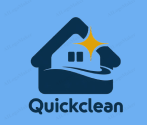

QuickClean: Clean Spaces, Happy Faces.
At QuickClean, we believe that a clean home is the foundation of comfort and well-being. Our mission is to make cleaning easy, reliable, and accessible for every household. We specialize in providing professional home cleaning and post-construction cleaning services designed to fit your needs, whether it’s a quick tidy-up or a deep, detailed cleaning.
Our team is trained, trustworthy, and passionate about delivering spotless results every time. With just a few clicks, you can book our services online and enjoy the convenience of hassle-free scheduling. We take pride in our attention to detail, use of safe and effective cleaning methods, and commitment to customer satisfaction.
At QuickClean, we don’t just clean—we create fresh, welcoming spaces where you can truly relax and feel at home.
QuickClean was founded with a simple goal: to make home cleaning faster, easier, and more reliable for busy households. What started as a small idea to help families maintain clean and comfortable homes has grown into a trusted service platform, offering professional cleaning solutions tailored to every need.
QuickClean: Clean Spaces, Happy Faces.